{kind=link}
{kind=link}
{kind=link}
{kind=link}
{kind=link}
{kind=link}
{kind=link}
{kind=link}
{kind=link}
{kind=link}
Nuevo soporte de hardware y nuevo número de versión (V4). Pruebas sobre ATS-Mini V1/V3.
Antes de empezar
Qué necesitas y qué puede hacer el radio. Esta guía cubre el firmware personalizado; para un equipo ajeno, revisa también Solución de problemas.
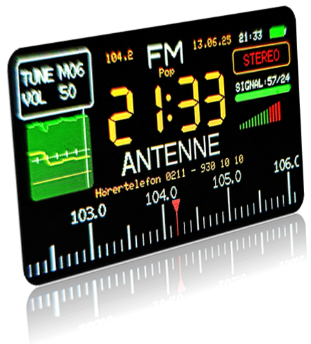
El ATS-Mini es un receptor de bolsillo con el chip SI4732 (o SI4735), un ESP32-S3 de doble núcleo y una pantalla a color de 320×170. Este firmware aprovecha el segundo núcleo —ocioso en el firmware original— para decodificar señales sin PC, teléfono ni Internet.
Los tres ámbitos de uso
- FM — radio local con estéreo, RDS, hora y RadioText.
- AM — onda larga, media y corta (150–30000 kHz) para radiodifusión.
- SSB — banda lateral única (USB/LSB): voz de radioaficionados y modos digitales (RTTY, CW, SSTV, WeFax, FT8…).
Requisitos de hardware por tarea
La escucha de FM/AM/SSB funciona sin modificar nada. Para decodificar hace falta hardware adicional según la tarea:
Para RTTY y CW: un puente de cable del pin 8 del CI amplificador a IO11 del ESP32-S3. Ver montaje.
Para SSTV y WeFax: un micrófono I2S INMP441 (≈1,50 €) cableado a GPIO12/13/14. Ver montaje.
Aviso
Este firmware sigue en desarrollo e intenta mostrar el máximo de información a la vez. Su uso es bajo tu propio riesgo. No es un firmware oficial; a los radioaficionados se les recomienda el firmware ats-mini. Versiones de referencia de esta guía: V1 y V3 (la V4 no se ha probado aquí).
Instalar o actualizar el firmware
El firmware se distribuye como binario .bin dentro de un ZIP y se carga («flashea») por cable USB. Los enlaces de descarga no son permanentes; la dirección de esta página sí.
Antes de nada: copia de seguridad
Conviene guardar el firmware de fábrica por si tu equipo tiene problemas de pantalla. En Windows, con el Flash Download Tool V3.9.8 del fabricante (modo ESP32-S3 / Developer): elige el puerto y usa Read Flash address 0x0 size 0x200000 para guardar 2 MB como
.bin. Ese archivo puede volver a subirse para restaurar el estado original.
Flashear desde el navegador (PC)
Qué hace
Carga el firmware en el radio usando Chrome/Edge, sin instalar nada.
Cuándo usarlo
Instalación normal desde un ordenador.
Pasos
- Descarga el firmware: actual (≈397k) · o el anterior (reserva) · o el legacy de mayo 2025.
- Descomprime el ZIP en cualquier carpeta.
- Abre el WebSerial ESP-Tool en el navegador.
- Pulsa Connect y conecta el radio encendido por cable USB; elige su puerto serie.
- En Choose a file, con Offset 0x0, selecciona el binario
*.bin. - Pulsa Program para iniciar el flasheo.
- Apaga y vuelve a encender el radio una vez.
Notas
Si el firmware se comporta raro, suele deberse a la memoria de un firmware previo: antes de transferir, borra todo con Erase en el ESP-Tool. Tras conectar, la herramienta detecta el chip ESP32-S3 y muestra mensajes como Chip is ESP32-S3 … Stub running…; el radio se apaga durante el proceso.
Flashear desde Android (móvil)
Qué hace
Instala el firmware sin PC, solo con un teléfono Android y cable OTG.
Cuándo usarlo
Cuando no tienes a mano un ordenador con Linux/macOS/Windows.
Pasos
- Instala las apps Serial USB Terminal y ESP32_Flash.
- Descomprime el ZIP descargado en la carpeta Serial (la que crea Serial USB Terminal en Downloads).
- En Serial USB Terminal, en Settings, elige control de flujo DTR/DSR o RTS/CTS (desconectado).
- Conecta y, con los dos botones, conmuta las líneas hasta que el radio quede en modo descarga (o abre el radio y pulsa el botón).
- Cierra la conexión y abre ESP32_Flash.
- Elige ESP32-S3, Bootloader Auto en OFF, selecciona
targetxxxx.bin, dirección 0x0000 y pulsa Flash.
Notas
Como el ESP32-S3 no tiene UART de hardware propio, si la conexión falla puede ayudar conmutar las líneas DTR y RTS desde un terminal serie para forzar un reset, sin abrir el equipo.
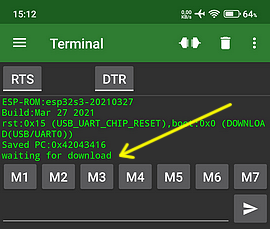
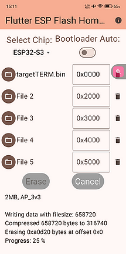
Primeros pasos
Qué hacer la primera vez, con el radio recién flasheado y sin emisoras guardadas.
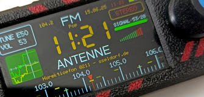
Preparar el radio y guardar tus emisoras
Qué hace
Encuentra las emisoras de FM fuertes y las guarda, para tener una fuente fiable de hora/fecha por RDS en cada sesión.
Cuándo usarlo
Una sola vez, justo después de instalar el firmware.
Pasos
- Enciende. El radio arranca en FM, en modo TUNE Freq: ya puedes girar por la banda.
- Abre el menú (clic) y elige ETM. El barrido rápido guarda temporalmente lo audible. (Para captar solo emisoras muy fuertes, acorta la antena.)
- Tras el barrido, el mando recorre las emisoras halladas (modo TUNE-ETM); la intensidad de la marca amarilla distingue fuertes de débiles.
- Busca la más fuerte. En el menú elige Store, gira a la posición 64 y haz clic para guardarla de forma permanente.
- Repite para colocar otras emisoras fuertes en las posiciones 1–10.
Notas
Se sugiere la posición 64 porque es rápida de alcanzar girando a la izquierda desde M01. La hora y la fecha llegan por RDS en el siguiente minuto en punto.
Escuchar FM
Sesión cotidiana en FM
Qué hace
Sintoniza tus emisoras locales y obtiene hora, fecha y RadioText por RDS.
Cuándo usarlo
Escucha diaria de radio local; también para detectar aperturas (overreach).
Pasos
- Enciende y haz clic para abrir el menú; otro clic pasa a modo Memory (aparece TUNE M01).
- Gira a la izquierda hasta TUNE M64, tu emisora RDS fuerte.
- Espera al siguiente minuto en punto para que lleguen hora y fecha. Si no salen, prueba otras FM guardadas.
- ¿Explorar condiciones? Menú ETM: si se guardan muchísimas emisoras, hay aperturas.
Notas
El RadioText aparece bajo el nombre, en hasta tres líneas centradas (con diéresis correctas). Con la fecha mostrada e inactividad, la hora se muestra grande en el display de 7 segmentos. En domingo o festivo, la hora sale en rojo. Véase también trazador de señal, AFC y estéreo.
Escuchar AM / onda corta
Sesión cotidiana en AM
Qué hace
Barre las bandas de radiodifusión de onda corta y te deja recorrer las emisoras encontradas.
Cuándo usarlo
Escucha de onda corta, donde las condiciones cambian a lo largo del día.
Pasos
- Menú Station y clic en swRadioGold → 6160 kHz, banda de 49 m, SW ALL. El modo pasa a AM (línea verde abajo = banda de radiodifusión).
- Menú ETM y clic: como la frecuencia de inicio está «en verde», barre solo las bandas de radiodifusión (de 2300 a 26100 kHz). Usa Step 5.
- Gira el mando para recorrer las emisoras guardadas por el barrido.
- ¿Buscar a mano? Pulsa TUNE varias veces hasta TUNE FREQ y usa Fast-Tune.
- Para onda media: Menú BAND → MW2 (paso de 9 kHz en Europa) y repite el ETM.
Notas
Por la mañana hay emisoras por encima de 10 MHz; al atardecer, desde la banda de 49 m (~6000 kHz) hacia abajo. La memoria ETM es volátil: se pierde al apagar. Para ver el nombre y la ubicación de cada emisora automáticamente, activa EiBi. Las marcas amarillas en la escala indican estaciones de la tabla interna (menú Station).
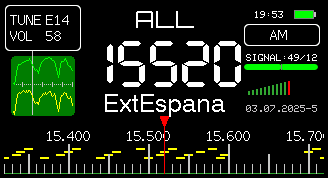
Escuchar SSB
Sesión cotidiana en SSB
Qué hace
Activa el modo banda lateral única y carga frecuencias SSB preconfiguradas (DWD, FT8, radioaficionados…).
Cuándo usarlo
Para escuchar voz de radioaficionados o preparar la decodificación de modos digitales.
Pasos
- Enciende y abre el menú (clic).
- Elige TUNE (clic) y gira a la izquierda hasta M64 (tu FM local, para fecha y hora).
- Menú Stations y clic para pasar al rango ALL (swRadioGold).
- Menú Mode y clic en USB (se carga SSB).
- Menú ETM y clic para activar las frecuencias preconfiguradas.
Notas
La primera frecuencia es Pinneberg en 146,220 kHz (USB). Girando a la derecha siguen frecuencias del DWD, otras estaciones SSB y, al final, frecuencias FT8 repartidas por la banda (recibibles 24/7). El ajuste SSB puede variar según el hardware; la V3 resultó la más constante. Para pasos finos por debajo de 1 kHz, ver Sintonizar.
Sintonizar: Fast Tune, NumPad, TUNE, SEEK
Distintas formas de moverte por la banda según lo que necesites.
Fast Tune — recorrer la banda a mano
Qué hace
Desacopla el mando de la lenta escala: con giros rápidos, los saltos de frecuencia se multiplican y la respuesta es inmediata.
Cuándo usarlo
Búsqueda manual rápida por la banda. Está activo por defecto.
Pasos
Simplemente gira deprisa: aparece la frecuencia directa en amarillo. Gira despacio para el ajuste fino normal. Para volver a la sintonía antigua, usa el menú de pulsación larga (TuneFast).
NUMPAD — introducir una frecuencia exacta
Qué hace
Entrada numérica clásica de frecuencia (o de fecha/hora).
Cuándo usarlo
Para saltar lejos rápido (p. ej. de 198 kHz a 28500 kHz) sin pelear con el mando.
Pasos
- Selecciona el menú TUNE y haz una pulsación larga (>350 ms).
- Gira el mando para mover el foco entre las 12 teclas; haz clic para escribir cada cifra.
- Una pulsación larga borra el último carácter.
- Pulsa la tecla Intro (abajo a la derecha) para aplicar la frecuencia.
Fecha y hora manual feb 2026
El punto decimal solo actúa en FM. En SSB puede hacer falta ajustar el BFO. El NumPad también fija la hora/fecha manual cuando no hay RDS: introduce p. ej. 11.55 (las doce menos cinco) o 21.02.1989. No distingue hora mundial de local. Útil para que EiBi y el IBP funcionen sin sincronización RDS.
Modos TUNE — qué hace el mando
Qué hace
Cambia la función del mando entre frecuencia, memorias y bloqueo.
Opciones (menú TUNE)
- TUNE FREQ — un giro ajusta la frecuencia (clásico).
- TUNE MEM — conmuta entre emisoras guardadas (aparece p. ej. M05).
- TUNE ETM — conmuta entre las memorias del último barrido ETM (E05).
- TUNE SEEK — el sentido de giro decide la dirección de la búsqueda (si está activado).
- TUNE LOCK — bloquea el mando: mantenlo pulsado >1 s. El menú sigue accesible para desbloquear.
SEEK Up/Down — búsqueda automática experimental
Qué hace
Busca automáticamente la siguiente señal útil con un algoritmo propio, sin limitarse al rango de escala.
Pasos
- Vía menú SeekUp / SeekDn.
- O con TUNE SEEK, si lo activas: brillo 63 + Freeze (o
seek 1en setting.txt).
Notas
Girar el mando o un clic detienen la búsqueda. En modo Classic, SEEK se comporta como en el firmware original.
Menú de pulsación larga — ajustes rápidos
Qué hace
Mantén pulsado el mando para acceder a ajustes sin entrar al menú. El tiempo elige la función:
Tiempos
- Volume (~0,5 s) — ajuste de volumen.
- TuneLock (~1,5 s) — bloqueo del mando.
- TuneFast (~2,5 s) — conmuta Fast-Tune / sintonía antigua.
- Freeze (~3,5 s) — congela la pantalla para guardar/exportar (bitmap, archivos USB, Slow/Fast, PlayList, tinte…).
Decodificar RTTY y CW (Morse)
Requiere el puente de cable a IO11. Funciona desde Volume 30+.
Decodificar una señal RTTY
Qué hace
Convierte una emisión de teletipo (p. ej. los partes del DWD) en texto en pantalla.
Cuándo usarlo
Para leer radiofax meteorológico RTTY y señales de radioaficionados.
Pasos
- Partiendo de FM: Menú Station → cualquier emisora.
- Menú Mode → USB o LSB.
- Menú ETM → llama las estaciones SSB preconfiguradas.
- Menú Decoder → Tone/BL: afina hasta que la retroiluminación parpadee al compás de la señal.
- Menú Decoder → RTTY: el texto empieza a formarse.
- Pulsa de nuevo: aparece LOCKED y los errores disminuyen.
Notas
En modo LOCKED la pantalla se congela salvo el texto (no se actualizan batería, hora ni señal); un clic libera. Con Store guardas la frecuencia (con decimales) y el modo USB. Cambiar a FM apaga el decodificador. Opciones del decodificador: RTTY (50 baudios), RTTY45, RTTY75 y Morse.
Decodificar Morse (CW)
Qué hace
Decodifica código Morse con detección automática de velocidad (WPM).
Cuándo usarlo
Balizas NDB (280–420 kHz AM), estaciones de tiempo y radioaficionados en CW.
Pasos
- Sitúate en la señal (USB/LSB) con suficiente volumen (Volume desde 37).
- Ajusta el brillo a 68 para ver el texto a tamaño medio en el terminal.
- Menú Decoder → Morse; otro clic activa el modo Locked/terminal.
- Instant Tuning: gira el mando (pasos de 10 Hz) hasta que arranque el decodificador y se mueva el texto amarillo. Compara arriba a la derecha los puntos/rayas reconocidos con lo que oyes.
- Instant Level: ajusta el volumen con pulsación larga (barra de color arriba). Un clic vuelve a Instant Tuning.
- Noise Level: si no basta, con brillo 68 + Freeze activa el umbral de ruido (on) y vuelve a subir el volumen (~47 en V3).
Notas
Espera a que la automática de WPM se estabilice (17–32; para NDB, ~7). El parpadeo cesa al dejar quieto el mando 5 s. Para el oído musical, el detector puede usar 880 Hz (La') en vez de 1000 Hz (brillo 64).
Afinar el tono a 1000 Hz (sin analizador)
Qué hace
Calibra el radio para que el tono que evalúa el detector sea de 1000 Hz, usando una AM fuerte como referencia.
Pasos
- Con Stations sintoniza una AM fuerte (p. ej. 6160 kHz); usa ETM para hallar una potente.
- Sintoniza centrado (ninguna flecha AFC verde), p. ej. 17490 kHz.
- Menú Mode → USB; ajusta el BFO si hace falta y sal de BFO.
- Con TUNE FREQ, baja un paso (−1 kHz) → 17489.000 kHz: se oye un tono de 1000 Hz.
- Comprueba con Decoder Tone/BL que la retroiluminación queda mayormente encendida.
Notas
Alternativa: analiza el sonido del altavoz con la app Spectroid y deja el pico en 1000 Hz (en LSB, el pico derecho). Algunos ejemplares quedan ~180 Hz desviados.
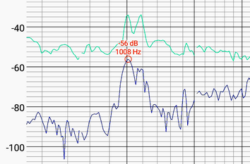
Vista de terminal y Replay
Qué hace
Muestra el texto decodificado en varias líneas con scroll, y permite reproducir mensajes guardados.
Pasos
- Activa el terminal eligiendo brillo 66, 68 o 70 (fuente pequeña monoespaciada / media / grande).
- Durante la decodificación se registran en RAM los mensajes del DWD que empiezan por «ZCZC».
- Menú Decoder → Replay para revisar el búfer circular.
- Para guardarlo en archivo: brillo 66 + Freeze crea
logfile.txt; o exporta por serie conlog.
Notas
El búfer recoge mensajes RTTY (entre ZCZC y NNNN), Morse, resultados EiBi en AM y texto RDS en FM. Indicadores arriba a la derecha: bucles de prueba RYRY y grabación de mensaje.
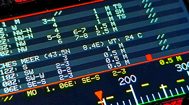
Montaje del puente IO11
Qué hace
Lleva el audio del amplificador a una entrada analógica del ESP32, para que el segundo núcleo pueda detectar el tono.
Pasos
Tiende un puente de cable del pin 8 del CI amplificador a IO11 del ESP32-S3. A partir de Volume 30+ se detectan tonos en torno a 1 kHz. La decodificación corre en el segundo núcleo (detector Goertzel), sin afectar al control del radio.
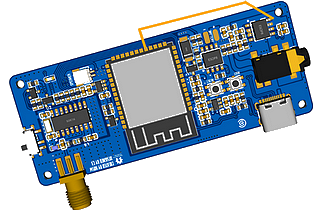
Recibir imágenes SSTV
Requiere el micrófono I2S INMP441.
Decodificar una imagen SSTV (Martin 1/2)
Qué hace
Convierte el sonido SSTV de los radioaficionados en una imagen en color a pantalla completa (320×256).
Cuándo usarlo
Sobre todo los fines de semana, en 14230 kHz USB.
Pasos
- Menú Stations → swRadioGold (banda ALL en AM).
- Menú Mode → USB.
- Menú ETM y clic (estaciones SSB preconfiguradas).
- Gira el mando 11 veces a la izquierda → 14230 kHz (vale también YouTube o Web-SDR).
- Menú Volume → señal claramente audible.
- Menú Decoder → Martin 1 y clic: pantalla completa al haber señal.
Notas
Solo modos Martin 1 y 2; otros modos se ven con colores desplazados pero a veces reconocibles. Tras la línea 256 el decodificador espera; girar a la derecha lo mantiene en pausa, a la izquierda continúa. Una pulsación larga «más larga» sale. Si te resulta demasiado colorido, conmuta a escala de grises.
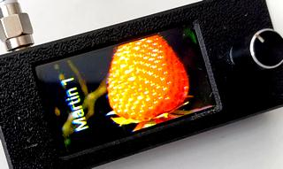
Recibir mapas meteorológicos WeFax
Requiere el micrófono I2S INMP441.
Decodificar un mapa WeFax (DWD / Pinneberg)
Qué hace
Recibe mapas del tiempo en escala de grises a pantalla completa, sin PC.
Cuándo usarlo
De día en Europa Central; emisiones a 120 LPM (Pinneberg/DWD, también Northwood).
Pasos
- Menú Stations → swRadioGold (banda ALL en AM).
- Menú Mode → USB.
- Menú ETM y clic (estaciones SSB preconfiguradas).
- Gira el mando 6 veces a la derecha → Pinneberg WeFax en 3853,200 kHz.
- Menú Volume → señal claramente audible.
- Menú Decoder → WeFAX y clic (pantalla completa).
- Acciona el mando dos veces seguidas: el sonido se decodifica en imagen.
Notas
El decodificador pasa por búsqueda → fase (phasing) → imagen. Girando el mando durante la recepción desplazas el inicio del mapa. Pulsación larga para salir. Un tono de 2250 Hz = blanco (lo que el DWD envía en reposo). WeFax por Web-SDR no da imágenes estables.
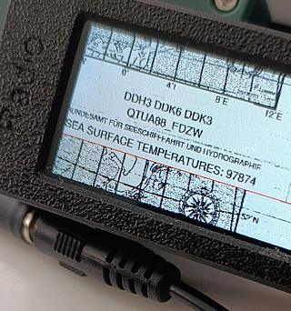
Montaje del micrófono I2S
Qué hace
Añade un micrófono digital INMP441 que entrega audio I2S de alta resolución para los decodificadores de imagen.
Pasos
- Coloca el módulo INMP441 (14 mm) detrás del altavoz, en la carcasa V1.
- Conecta GPIO12/13/14 a los hilos de datos del micrófono.
- Alimenta con 3,3 V y GND. (GPIO11 ya va al altavoz para RTTY/CW.)
Notas
Las líneas digitales 12/13/14 sin apantallar provocan interferencias en el radio cuando se usa un decodificador I2S. El I2S queda activo hasta apagar; si no se invoca, no molesta. Un truco usado en desarrollo: dejar el equipo modificado en modo mute como decodificador, recibiendo por micrófono la señal limpia de un segundo radio.
Identificar balizas IBP experimental
Ver qué baliza NCDXF/IARU está activa
Qué hace
Calcula, según la hora UTC y la banda, qué baliza del proyecto internacional (18 balizas, ciclo de 3 min) emite en la frecuencia elegida, y lo muestra sobre la frecuencia.
Cuándo usarlo
Para evaluar la propagación en HF con las balizas de 14100, 18110, 21150, 24930 y 28200 kHz.
Pasos
- Asegúrate de tener la hora sincronizada (RDS o NumPad).
- Carga estas memorias (por serie o
mem.txt) y sintoniza una de ellas:
9999
51,14100,19,2,-920
52,18110,19,2,80
53,21150,19,2,-920
54,24930,19,2,-920
55,28200,19,2,-920Observar la banda
Herramientas para ver, no solo oír, lo que ocurre en una banda.
Cascada (waterfall) FM / AM / SSB experimental
Qué hace
Representa la intensidad de señal del rango de escala actual (400 kHz en AM/SSB, 4 MHz en FM), barriéndolo continuamente.
Pasos
- Ajusta el brillo a 32 o 33.
- Llama ETM: aparece la cascada. En SSB el BFO se pone en 0 Hz automáticamente.
- Gira para ajustar la frecuencia; un clic pasa a modo escucha (el barrido se detiene) y vuelve.
- Sal con «pulsación larga y soltar».
Notas
Usa el paso (Step) de AM, idealmente 5 kHz. En FM, útil en Sporadic-E para ver señales por debajo de 87 MHz; la recepción apta para RDS se marca con un trazo vertical.
Band Monitor — ocupación a lo largo de 5 horas experimental
Qué hace
Construye lentamente una gráfica de ocupación de 400 kHz: eje X = tiempo (5 h en tramos de 15 min), eje Y = frecuencia.
Pasos
En AM o SSB, con brillo 38 o 39, llama ETM. Avanza un paso a la derecha por minuto (300 px = 300 min).
Notas
Marcas amarillas = buena calidad; azul = solo cierta intensidad. Abajo: frecuencia de barrido, tensión de batería y minuto actual. Con la hora por RDS, las marcas son en hora local.
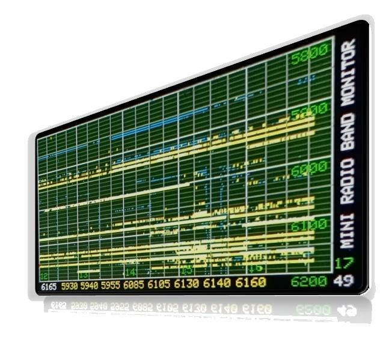
Trazador de señal, AFC, estéreo y mono
Trazador de señal
Con brillo 20, 50 o 90 (y sin decodificador), registra la intensidad y calidad durante un minuto. Con hora RDS, la línea vertical es un segundero.
AFC (afinado fino)
Unas flechas indican la desviación de frecuencia; el punto central se enciende cuando la emisora está bien sintonizada y fuerte. Útil tras un ETM en AM.
Estéreo / mono
El rótulo STEREO aparece a partir del 95 % de separación (antes, con el porcentaje de blend). Con brillo 47/46 fuerzas mono temporal (quita el siseo); con 48/49 silencias un canal estéreo (efecto estéreo con dos equipos).
EiBi — nombre, ubicación y distancia del transmisor
Qué hace
Busca la frecuencia actual en la lista EiBi (~10 000 entradas) y muestra la emisora, la ubicación del transmisor en texto claro y la distancia en km.
Pasos
- Con el radio en modo USB Flash, guarda en él eibi.txt y README.txt (con esa grafía exacta).
- Para la distancia, añade tu posición en setting.txt:
home 51.198455, 6.879572. - Reinicia el radio con los archivos presentes. Al fijar una frecuencia, tras un rato comienza la búsqueda (SEARCH) y se muestran los datos.
Notas
La búsqueda corre en el núcleo 2, sin frenar la recepción (EiBi-Fast cachea los últimos resultados para mostrarlos sin demora). Sin hora RDS se muestra la primera entrada; con hora se respetan las indicaciones UTC. No considera región de destino: corrige editando el texto si hace falta.
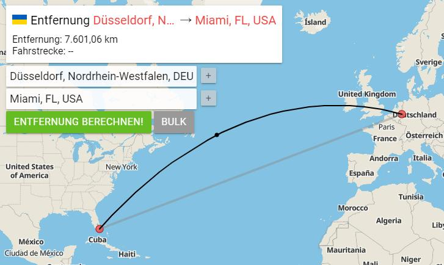
Gestionar archivos y datos
Listas de emisoras, ajustes, capturas y registros: por unidad USB o por puerto serie.
Usar el radio como unidad USB Flash
Qué hace
El radio se monta como una memoria USB para copiar archivos desde un PC o teléfono.
Pasos
- Mantén pulsado el codificador mientras enciendes. Aparece el símbolo de unidad.
- En el PC se monta una unidad (si no, desconecta y reconecta el equipo encendido).
- Copia o edita los archivos; expulsa el medio tras escribir.
Notas
No es una memoria USB real: el flash del ESP32-S3 admite del orden de >100 000 escrituras. Si se comporta raro, formatéalo desde el PC (borra los archivos, no el firmware). Detalles de recuperación con el WebSerial ESPTool.
Archivos que entiende el firmware (al arrancar)
Listas (se importan al encender)
mem.txt— memorias. Primera línea9999; formato memoria,frecuencia,banda,mode,BFO.user.txt— lista de estaciones AM. Primera línea9998; formato frecuencia,nombre.setting.txt— ajustes. Primera línea9997(p. ej.battery 1,home …,tint 55000,slow 1,seek 0). Exportasettings.txt(con s) con brillo 54 + Freeze; renómbralo asetting.txtpara importarlo.playlist.txt— programación horaria.greyscale/inverse/rotate— archivos vacíos que activan modos de pantalla.
Exportar (Freeze)
Con Freeze y el brillo correspondiente se crean: 51 memo.txt · 52 stations.txt · 53 etm.txt · 54 settings.txt · 55 playlist.txt · 50 captura BMP · 66 logfile.txt.
Ver en terminal vs. guardar
Con SoftMute = 0, ese mismo gesto muestra el archivo en el terminal en lugar de guardarlo (útil para revisarlo). Con cualquier otro valor, lo guarda/sobrescribe.
Aviso
Para una fecha de creación correcta, sincroniza la hora (RDS/NumPad). Un mem.txt presente al arrancar sobrescribe las memorias guardadas.
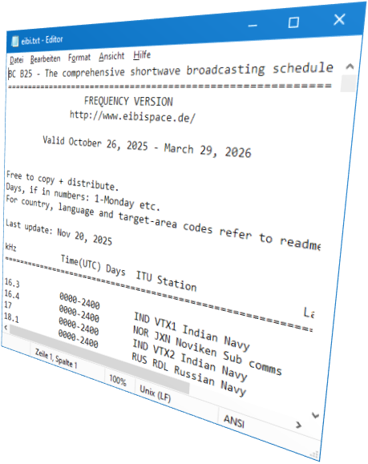
Intercambiar datos por puerto serie
Qué hace
A 9600 baudios, con un terminal (CoolTerm en escritorio o Serial USB Terminal en Android), exporta/importa listas y capturas.
Comandos (un carácter, sin Intro)
1— exporta una captura BMP (≈160k binarios).3— activa/desactiva la salida serie no solicitada.4/5— exportan las memorias / la lista de estaciones AM como texto.- cualquier carácter — exporta la memoria ETM actual.
9999/9998— importan memorias / estaciones desde un archivo de texto.eraseodel— borran las listas de usuario;usercuenta entradas;logvuelca el búfer RTTY.
Gestión de archivos (Copy/Type/Remove/Rename)
Para operar sobre el USB Flash por serie, la primera línea manda. Ejemplos:
copy setting.txt ← copia lo que sigue como setting.txt
9997
battery 2
type setting.txt ← muestra el archivo en el terminal
remove setting.txt ← borra el archivo (sin vuelta atrás)
rename eibi.txt eibi.tmp ← renombra (p. ej. para desactivar EiBi)Aviso
Desactiva el control de flujo por hardware (RTS/DTR) en el terminal, o al abrir el puerto se resetea el ESP32-S3. Un cable de datos USB-C (p. ej. de una batería externa) puede enviar datos y frenar mucho el firmware: usa un cable de carga sencillo.
PlayList — reproducir emisoras por horario
Qué hace
Reproduce automáticamente una memoria a una hora dada, durante una duración, y luego silencia.
Pasos
- Crea
playlist.txten el USB con líneas hora memoria duración:
...
09:00 21 60 ← a las 09:00 reproduce Mem21 durante 60 min
...Presente al encender, se activa y se comprueba una vez por minuto. Con brillo 55 + Freeze (SoftMute=0) la ves en el terminal; con SoftMute≠0 conmuta activo/inactivo.
Notas
La PlayList vive solo en el USB Drive, no en RAM. También puede crearse por serie con Copy.
Personalizar la pantalla
Brillo (Backlight)
Cómo
Menú Backlight, rango 0–99. Con valores impares, el brillo baja tras un minuto de inactividad para ahorrar energía. Ojo: muchos valores activan funciones ocultas — ver la tabla de códigos.
Escala de grises, inversa y rotación
Cómo
En el USB Flash, crea un archivo vacío con el nombre exacto:
greyscale— arranca en grises/blanco y negro.inverse— invierte la representación.rotate— gira el display 180° (codificador a la izquierda; para zurdos).
Para desactivar, borra el archivo. El nombre debe ser exacto.
Tint (tinte de color) experimental
Cómo
Solo con la escala de grises activa. Con brillo 60 + Freeze, la frecuencia de AM (150–30000) elige el tono (~60 000 colores con la inversa). Se guarda en setting.txt (tint 55000). Es una «virguería»: las condiciones de recepción no cambian.
Referencia: códigos de Backlight
Durante el desarrollo, el valor de brillo (menú Backlight) también activa funciones. Muchas requieren además Freeze (pulsación larga ~3,5 s).
| 20·50·90 | Trazador de señal |
| 30 | ETM-AM continuo (hasta hallar estación) |
| 32·33 | Cascada AM/SSB y FM |
| 34·35 | Escáner ETM con preescucha (FM/AM/USB/LSB) |
| 36·37 | Escaneo ETM de memorias con preescucha |
| 38·39 | Band Monitor (5 h) |
| 44 +Freeze | Conmuta Slow/Fast |
| 46·47 | Fuerza mono en FM |
| 48·49 | Silencia un canal estéreo |
| 50 +Freeze | Captura BMP a USB Flash |
| 51·52·53·54 | Exporta memorias / estaciones / ETM / ajustes |
| 55 +Freeze | Activa/muestra la PlayList |
| 60 +Freeze | Tinte (por frecuencia de AM) |
| 61 +Freeze | Conmuta inversa |
| 62 +Freeze | Conmuta grises / color |
| 63 +Freeze | Conmuta TUNE SEEK |
| 64 +Freeze | Frecuencia del detector (1000 / 880 Hz) |
| 66 +Freeze | Guarda mensajes RTTY (logfile.txt) |
| 66·68·70 | Terminal: fuente pequeña mono / media / grande |
| 68 +Freeze | Conmuta el umbral de ruido del detector |
Un brillo con valor 0 no se guarda. Los valores 69, 82, 83 y 99 quedan reservados a otras pruebas. Recuerda: con SoftMute = 0, los códigos de exportación muestran el archivo en el terminal en vez de guardarlo.
Solución de problemas
Los decodificadores no detectan nada
Comprueba el puente IO11 (RTTY/CW) o el micrófono I2S (SSTV/WeFax). Sube el volumen (RTTY/CW desde 30; CW desde 37–47) y afina el tono a 1000 Hz.
El firmware va muy lento / el decodificador falla
Un cable de datos USB-C conectado envía datos y frena el firmware. Usa un cable de carga sencillo. Desactiva el control de flujo por hardware (RTS/DTR) en el terminal.
Interferencias al usar SSTV/WeFax
Las líneas I2S (GPIO12/13/14) sin apantallar generan ruido en el propio radio una vez activado un decodificador I2S. Permanece activo hasta apagar. Considera apantallar o usar un segundo radio como fuente de audio.
La unidad USB se comporta de forma extraña / capturas con líneas desplazadas
Formatéala desde el PC (borra archivos, no el firmware). Recuerda expulsar tras escribir y vigilar los ciclos de escritura del flash.
SSB suena desplazado o el tono no cae en 1000 Hz
El ajuste SSB varía según el hardware; la V3 es la más constante. Algún ejemplar queda ~180 Hz desviado: corrige con el BFO o mide tu desviación con el método de la AM de referencia.
Datos EiBi o de transmisor incorrectos
Sincroniza la hora (RDS o NumPad) y verifica que
eibi.txt y README.txt están en el USB con esa grafía. No se considera la región: edita el texto si hace falta.
La búsqueda de errores es ardua: hasta que se corrigen, «todo bug cuenta como feature». El uso es bajo tu propio riesgo.
Historial de cambios
Esta firmware es un proyecto en evolución continua. Resumen cronológico de las funciones añadidas.
Junio 2026
Mayo 2026
Decodificadores de imagen SSTV y WeFax mediante el micrófono I2S INMP441.
Abril 2026
Actualización del decodificador RTTY/CW: Instant Tuning, Instant Level y Advanced Noise Level; afinado en pasos de 10 Hz; segundo tono de detector (880 Hz).
Marzo 2026
Ampliación serie (Copy/Type/Remove/Rename), soporte IBP, Logger EiBi/RDS, vista de archivos en terminal, PlayList, indicador de estado de guardado.
Febrero 2026
Hora/fecha manual por NumPad, ubicación y distancia del transmisor (EiBi), EiBi-Fast, SLOW/FAST (≈62 % más de autonomía: 13:10 → 21:25 min en una prueba) y SEEK con algoritmo propio.
Enero 2026
Entrada numérica NumPad y Band Monitor de cinco horas.
Diciembre 2025
Unidad USB Flash, soporte EiBi, escala de grises / inversa / rotación / tinte, escaneo de memorias.
Octubre 2025
Representaciones en cascada (waterfall) en FM, AM y SSB. Inicio del Mini-Radio-Script para programar el firmware uno mismo.
Septiembre 2025
Datos por puerto serie (export/import de memorias y estaciones, captura BMP); vista de Terminal.
Agosto 2025
Canales estéreo separados, indicación de blend, centro AFC y mono forzado.
Versión 3
Sintonía SSB con pasos <1 kHz y Fast Tune.
Versión 2
Decodificador de RTTY y CW sobre la antena, con el puente IO11.